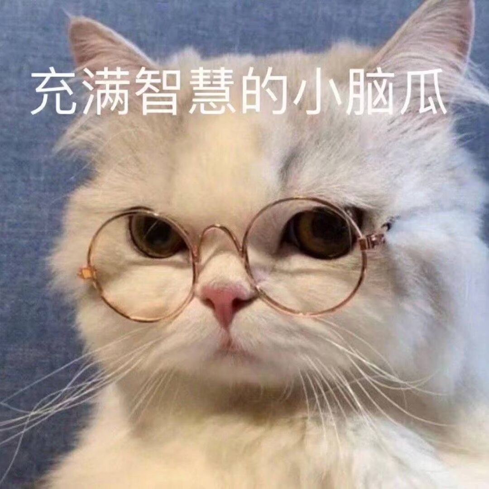
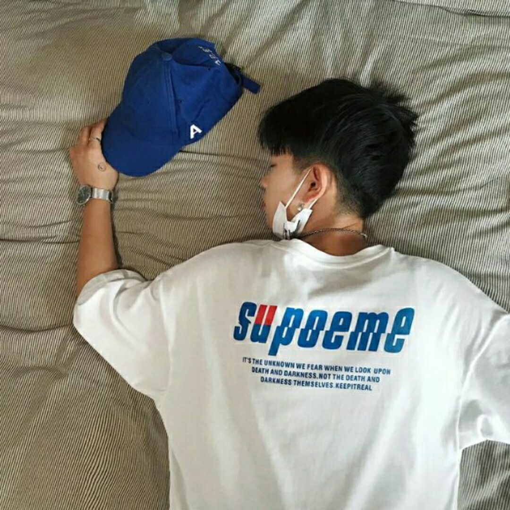
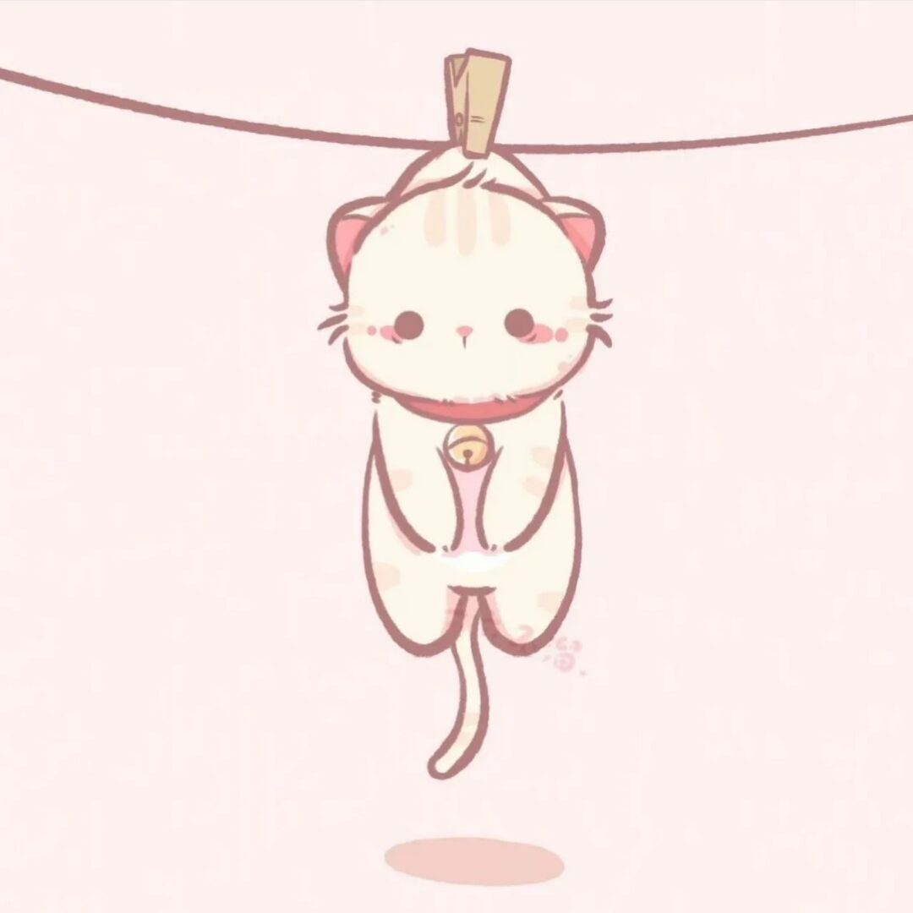
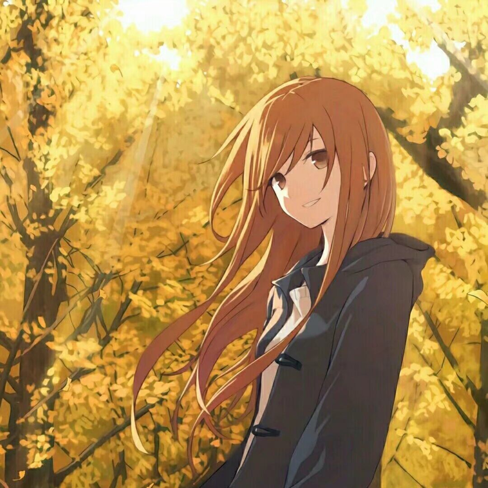

LeoRandom
09年在多玩盒子上第一次接触MC，
一直在玩单人创造造高达（哪个男孩小时候不想造机器人呢），
后11年时找到mcbbs论坛后开始了多人游戏之旅。从小时候就一
直想要开着一个属于自己的服务器，在12年时候捣鼓了路由器端口映射
和hamachi等开服，后面发现这种东西只能容纳2-3个人进行多人游戏。在网上
认识了很多朋友，第一次长驻的服务器管理也在后面自己单走成为了noble团队的
创始人。在初中时退坑，18年回坑mc手游（网易版）。19年因为网易
mc基岩版限制太多，外挂横行，把告示牌等可以自定义的内容屏蔽了，转
战国际版基岩版MC。19年初接触到国内第一批BDS服务端插件的开发
者并开始学习bds插件开发。19年4月在逛国外社区的时候发现了一个
手机可以玩的java服，后开了国内首个基岩版地球ol并累计注册玩家2
000余人。19年进入大学后又把mc暂时搁置。20年中因为对编程技术的
熟练掌握重新回坑mc，参与了基岩版ElementZero框架开发，并贡献了多
款基础插件（刷矿、查包、举报、组队）。
Cinnaio
与MC一起渡过有3650个日夜，有过顺情生喜悦，也有过
逆情生忧愁，从第一次进入“我的世界”到独立管理一个服务器，在一次
又一次的尝试中不断的掌握新的知识，不断提升自己，在学习的旅途上也认识了一
批又一批的朋友，很开心也很幸运。3650个日夜，MC于我不再仅仅
只是一款代码堆砌的游戏，它从小学陪伴我到长大，我在成长，my worl
d亦然成长

Too_Be
写自己的故事，突然愣住了，我看到他们的介绍都写的很好，
我也不知道该从哪里考试讲述了。还记得不知道是哪天早晨，
我还在睡觉的时候，我的妈妈给我带回来了一台平板，然后我
就莫名糊涂的开始玩MC，那个夏天，我一直在玩，我的快乐，就
是盯着屏幕看着自己的建筑傻笑。到现在，我了解到了更多更多，
我知道什么是Mod，插件，光影，我还可以和好多朋友在一起玩
。他让我认识到了一批志同道合的朋友，我们在一起建筑，在一
起游玩，这个网站也是他们的企划下构建的。最后一句特别中二
的话，此生无悔入MC，来世还做方块人！

Cccting
从第一次接触到这个框在方块中的像素世界，我就被他特有
的魅力所吸引，我可以在茂密的丛林中探险，可以穿过漫无
际涯的戈壁滩，我们在海洋中寻觅神殿，在地狱中探索堡垒，
比起游戏世界，他更像一场奇幻人生之旅。从一把耐久度3
的木镐和一个神奇的二次元口袋开始，我创造出了第一个只属
于我的“我的世界”。

Silhouette
我还记得我是在初中时第一次接触到《我的
世界》这款游戏的，在当时，地图还是有边界的，那会儿我也就是
在游戏中开创造建房子，玩一玩当时的铁轨矿车，当时玩法也比较
单一，但是我仍然将MC当作我每天除了学习以外的唯一的消遣方式
。在高中三年，由于上学时间比较长，所以只能暂时抛下了游戏。
但是我仍然在B站等APP中观看许多UP主们的MC视频，看他们快乐玩
耍互坑的同时学习一些MC的小技巧。在上大学后，我有了更多的时间
做一些我喜欢的事情，所以，我开始有更多的时间投入到我最爱的MC
上，不仅在玩原版生存，并且还体验了一些整合包生存。不仅在电脑
上玩，也在手机上玩，还和一些朋友们一起玩，一起感受MC带给我们
的无穷乐趣。现在，只要我有时间，我就会上MC玩一会，如果有人有
什么需求，我可以尽我所能帮忙。我对MC红石科技很有兴趣，但是我
自己只能做一些简单的红石建筑，所以我现在抽空了解红石的很高级
用法，学习更多的红石科技